This Cataclysm Classic Mining leveling guide will show you the fastest way to level your Mining profession up from 1 to 525 in Cataclysm Classic.
This Cataclysm Classic Mining leveling guide will show you the fastest way to level your Mining profession up from 1 to 525 in Cataclysm Classic.
I recommend trying Zygor's 1-85 Leveling Guide if you are still leveling your character or you just started a new alt. The guide will help you to reach level 85 a lot faster.
Table of contents:
Mining Trainers
You can learn every rank of Mining from every trainer.
| Horde | Alliance |
|---|---|
OutlandNorthrend
|
Outland
Northrend
|
Smelting to 500
If you have enough gold, you can actually skip the first 500 skill points by simply smelting ores (you have to mine a few ores here and there). But, if you need the ores for Jewelcrafting, or you simply prefer leveling Mining regularly, then scroll down a bit in the guide for farming routes.
Most smelting recipes are yellow or green, so I cannot list the exact number of ores that you will need. These are all approximate numbers below. It's possible you will need even more ores if you are unlucky with the skill gains.
| Skill | Notes |
|---|---|
| 1-50 | 70x |
| 50-70 | 70x 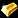 Smelt Tin. This one will be grey after 75, but you will need these later. You can still go to the next step even if you did not reach 70. |
| 70-90 | 70x |
| 90-100 | 10-15x |
| 100-125 | 40x |
| 125-135 | 20x |
| 135-150 | 15x |
| 150-175 | 50x |
| 175-200 | 25x 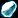 Truesilver Ore, smelt or mine Mithril until 190. |
| 200-275 | 130x |
| 275-325 | 250x |
| 325-340 | 90x |
| 340-350 | No smelting recipe for this part. You will have to mine a few ores. |
| 350-375 | 60x |
| 375-400 | I recommend Mining some cobalt for this part because the smelting recipes you can make are much harder to sell than regular bars (depending on your realm). But, if you can get a lot of cheap Khorium Ore, you can use 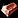 Smelt Khorium up to 400 or you can also level with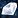 Smelt Hardened Adamantite. |
| 400-425 | 100x |
| 425-475 | 240x |
| 475-500 | 200x |
Mining Leveling Routes
Make sure that you turn on the Find Minerals filter on your minimap!
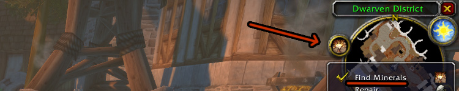
1 - 50
Don't forget to buy a Mining Pick from the Mining Supply vendor near your trainer! You don't have to equip it, but you must have one in your inventory.
You will mine  Copper Ore in this section.
Copper Ore in this section.
Durotar
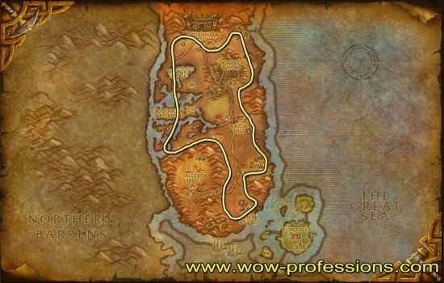
Darkshore
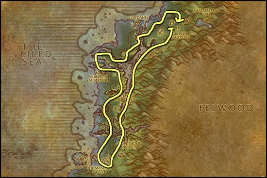
50 - 100
Visit your trainer and learn Mining Journeyman. You will mine the following ores: 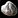 Tin Ore,
Tin Ore,
Hillsbrad Foothills
The red zone on the map is filled with Tin everywhere. When you mined all of it, go outside the zone where you can see the little yellowish arrows, mine a few Tin, and head back to the red zone because it's most likely that the Tin Veins there are already respawned.
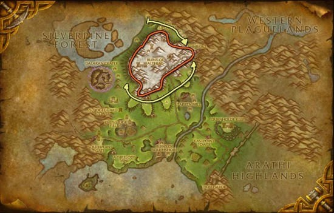
Northern Stranglethorn
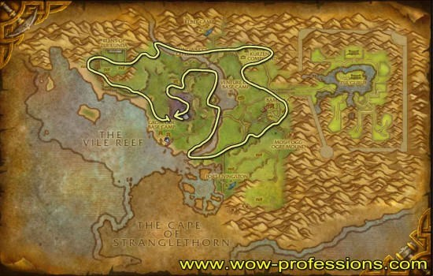
100 - 150
You will mine the following ores:  Iron Ore, Gold Ore
Iron Ore, Gold Ore
Western Plaguelands
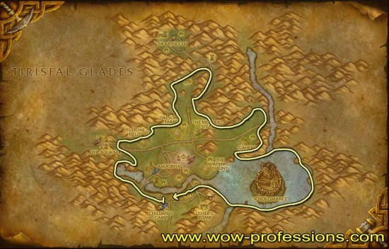
Feralas
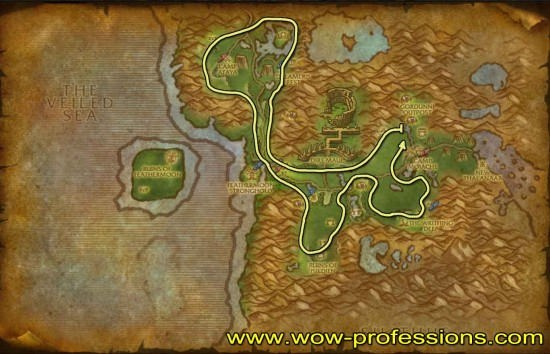
150 - 200
Visit your trainer and learn Mining Expert.
You will mine the following ores:  Mithril Ore, Truesilver Ore
Mithril Ore, Truesilver Ore
Felwood and Burning Steppes are the best places to farm because the mining route is just so simple in these two zones. Badlands is also a really good place, but I found more Mithril in these zones.
Felwood
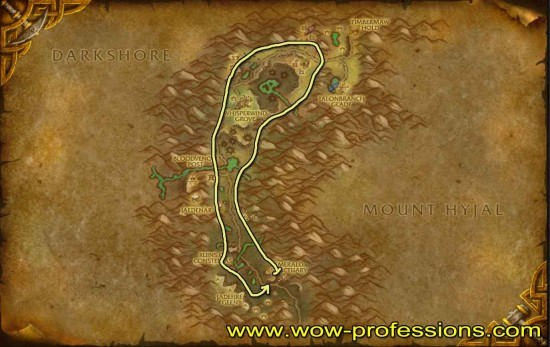
Burning Steppes
Don't go into Dreadmaul Rock. There is plenty of Mithril at the corner of the map; you will just get dismounted if you go into the cave, and it will slow you down.
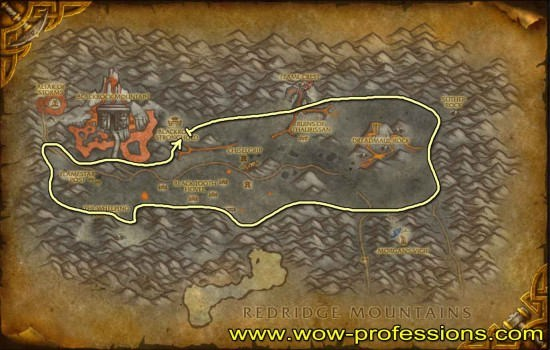
200 - 275
Visit your trainer and learn Mining Artisan.
You will mine  Thorium Ore.
Thorium Ore.
When you reach 275, you can go to Hellfire Peninsula and mine Fel Iron or stay in the zones listed below until you reach 300.
Un'Goro Crater
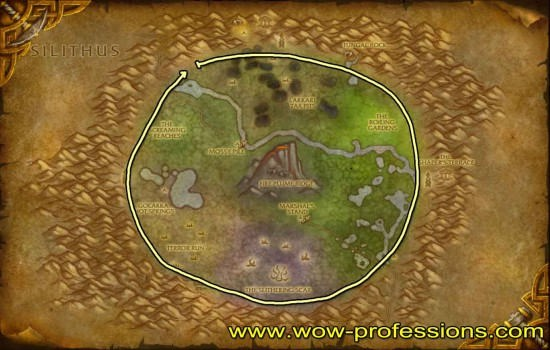
Winterspring
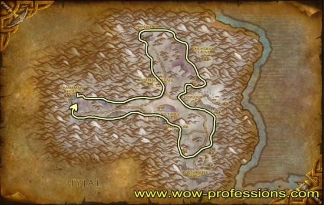
Master Mining
300 - 325
Visit your trainer and learn Mining Master.
There is not much difference between the two routes. I got roughly the same number of Fel Iron on both routes.
Small Thorium Veins will give skill points up to 345, and Rich Thorium Veins up to 350. If you have a lot of competition in Hellfire Peninsula or don't have a flying mount, I recommend mining more Thorium at the previous zones up to 325.
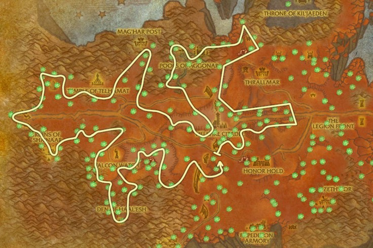
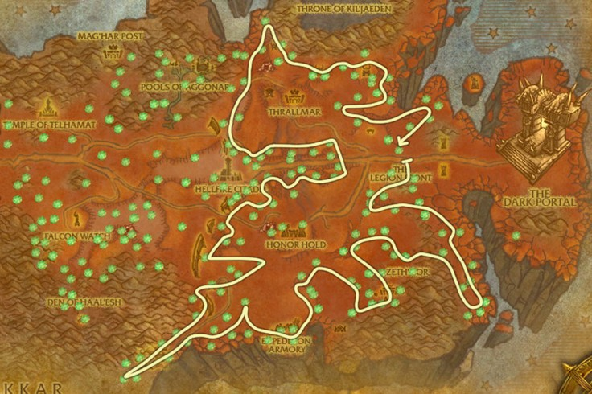
325 - 350
There will be a few Rich Adamantite nodes in Terokkar Forest that you can't mine until you reach 350. But, they can only spawn in the areas accessible by flying mount, so this is not an issue for lower-level players. (Skettis and the area above Shattrat City)
There are two caves marked with red circles on the map. You should go inside both of them and make sure that you go all the way to the end because sometimes you won't see the Mining nodes from the entrance.
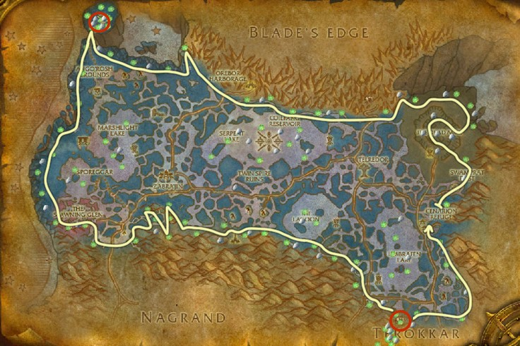
You will need a flying mount for this route, use route 3 if you don't have one.
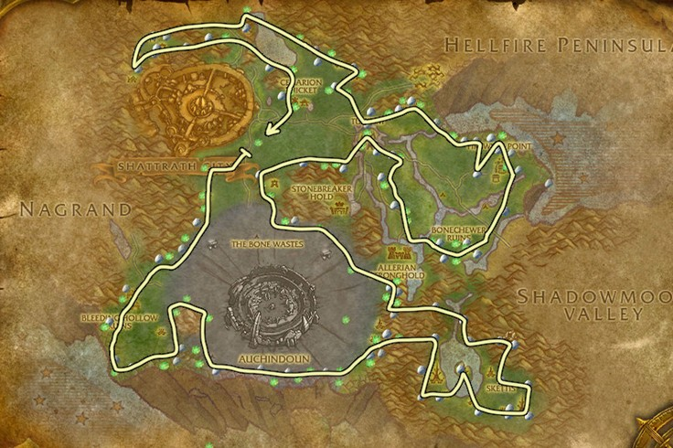
Alternative route for players without flying mount.
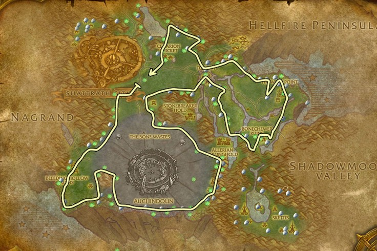
Grand Master Mining
Visit your trainer and learn Grand Master mining. (Requires level 55)
350 - 400
Both Borean Tundra and Howling Fjord are great zones for leveling to 400. But I recommend using the "no flying" routes if you are still leveling and don't have a flying mount yet. Lower-level players also might want to skip some of the caves in Borean Tundra (depending on your level and gear).
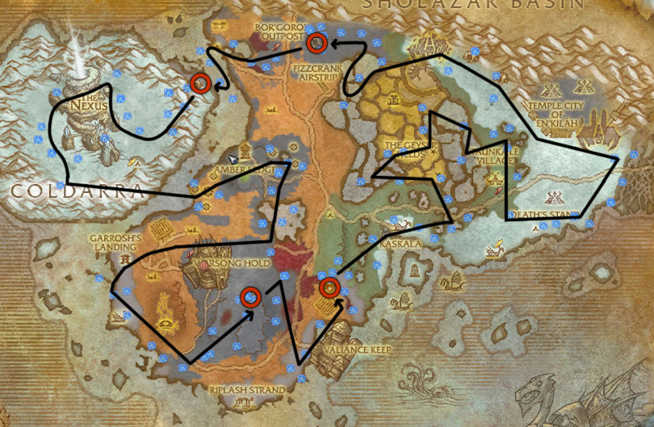
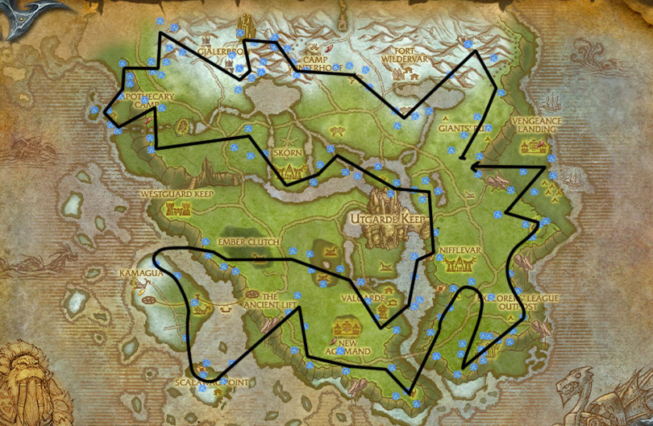
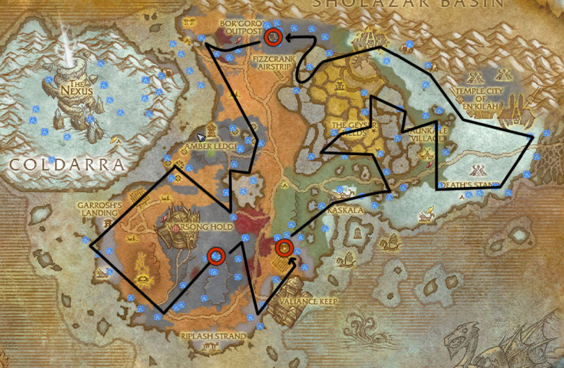
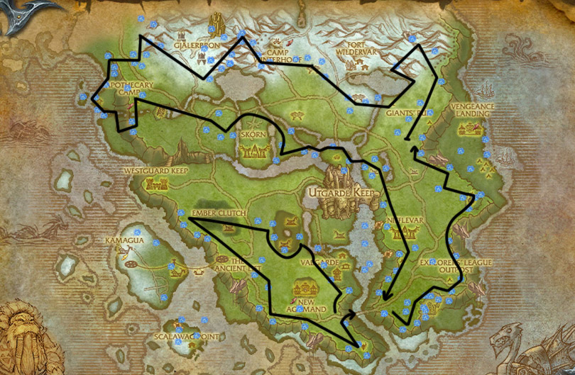
400 - 450
I think Sholazar Basin is the better zone for leveling to 450, and the route is much easier to follow. But, you can use Storm Peaks as an alternative if you have a lot of competition in Sholazar Basin.
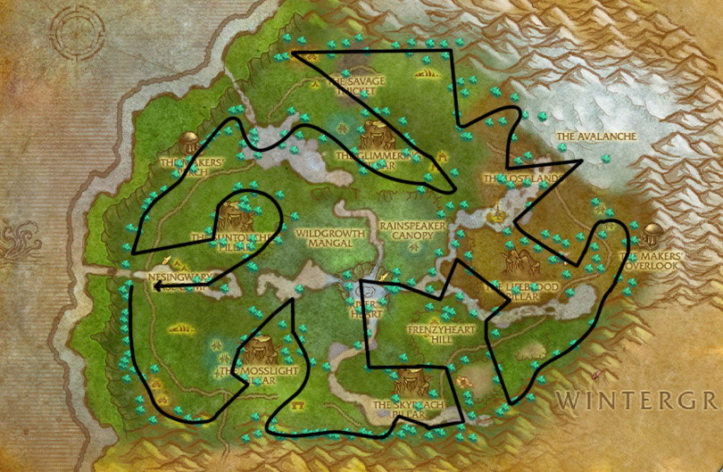
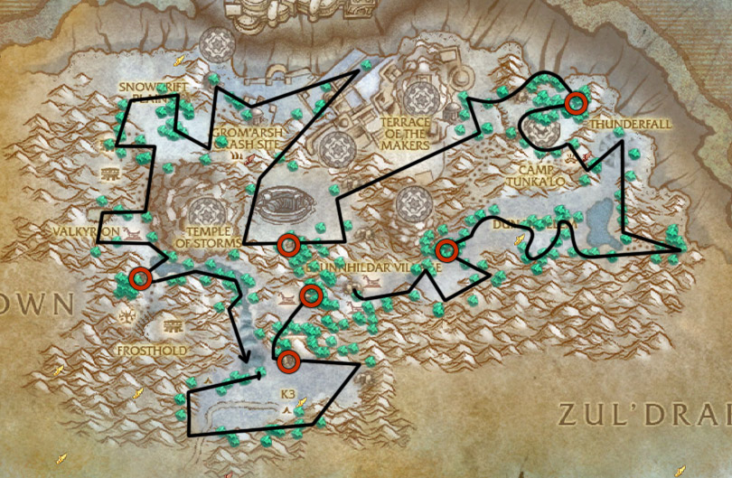
425 - 475
Visit your trainer and learn Illustrious Mining.
You will mine  Obsidium Ore.
Obsidium Ore.
There is a lot more Obsidium in Hyjal than in Vashj'ir, but there are also a lot more players. Hyjal beats Vashj'ir if no one is farming the zone; otherwise, the zones are similar. If you go to Vashj'ir, you must do the starting quests until you get your underwater mount.
Mount Hyjal
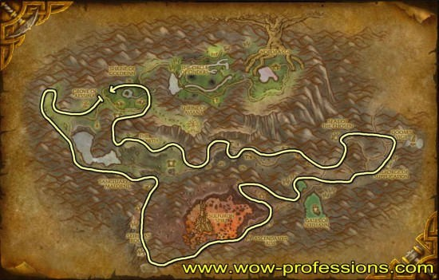
Vashj'ir
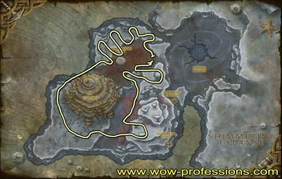
475 - 525
You will mine  Elementium Ore.
Elementium Ore.
Twilight Highlands
Rich Elementium Vein requires Mining 500 and Pyrite Deposit 525, so you won't be able to mine them yet.
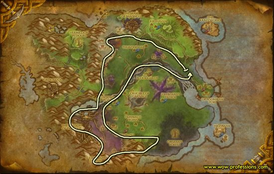